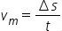
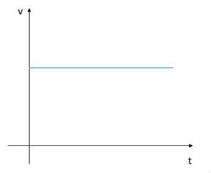
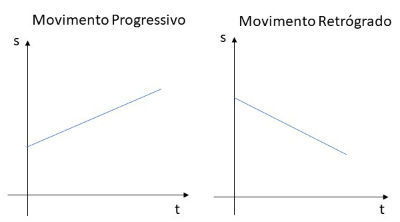

Para começarmos o estudo de cinemática, são nescessários alguns conceitos:
Espaço: posição em que o móvel se encontra em um determinado tempo. Pode ser positivo ou negativo de acordo
com a origem (espaço nulo).
Velocidade: a variação de espaço do móvel em um determinado período de tempo.
No Sistema Internacional de Unidades (SI) o espaço é medido em metros e a velocidade em metros por segundo.
A velocidade escalar média pode ser expressa da seguinte forma:

onde:
vm = velocidade média
ΔS = variação do espaço
t = tempo
Velocidade Instantânea
A velocidade instantânea é o valor da velocidade para um intervalo de tempo extremamente pequeno. Representada por v, é a velocidade que vemos no velocímetro do carro.
No movimento retilíneo uniforme a velocidade média apresenta o mesmo valor da velocidade instantânea, ou seja:
vm = v
Gráficos
Como no MRU a velocidade é constante, o gráfico da velocidade em função do tempo será representado por uma reta paralela ao eixo do tempo.

MRU - Gráfico da velocidade em função do tempo
A função horária da posição é uma função do primeiro grau, logo seu gráfico será uma reta.

MRU - Gráfico da posição em função do tempo
O Movimento Retilíneo Uniformemente Variado (MRUV) é aquele que é realizado em linha reta, por isso é chamado de retilíneo. Além disso, apresenta variação de velocidade sempre nos mesmos intervalos de tempo. Uma vez que varia da mesma forma, o que revela constância, o movimento é chamado de uniformemente variado.
A trajetória reta desse movimento pode ocorrer na horizontal ou na vertical. Exemplo disso é um carro percorrendo uma trecho retilíneo em uma estrada ou um foguete sendo lançado ao espaço.
Desta forma, a média da aceleração é igual a sua variação ocorrida em determinados intervalos de tempo, o que é conhecido como aceleração instantânea.
a = Δv / Δt
a = V - Vo / t - to
a = V - Vo / t
Desses cálculos, resulta a fórmula de MRUV:
V = Vo + a. t
Onde,
v: velocidade (m/s)
vo: velocidade inicial (m/s)
a: aceleração (m/s2)
t: tempo (s)
Movimento Retilíneo Uniformemente Acelerado
O Movimento Retilíneo Uniformemente Acelerado ocorre quando um corpo cuja velocidade aumenta sempre na mesma proporção ao longo do tempo.
Exemplo disso é ligar uma moto que está estacionada (velocidade inicial 0) e começar um percurso. A moto vai ganhando velocidade de forma constante, até atingir o limite que pretende (velocidade diferente e distante de zero).
Movimento Retilíneo Uniformemente Retardado
O Movimento Retilíneo Uniformemente Retardado ocorre quando um corpo em movimento reduz a sua velocidade de forma constante ao longo do tempo. Neste caso a aceleração terá sinal negativo.
Exemplo disso é uma moto que está em movimento (velocidade diferente e distante de zero) e que têm de desacelerar quando se depara com um grande congestionamento.
Seu motorista poderá reduzir a velocidade de forma constante até chegar a zero.